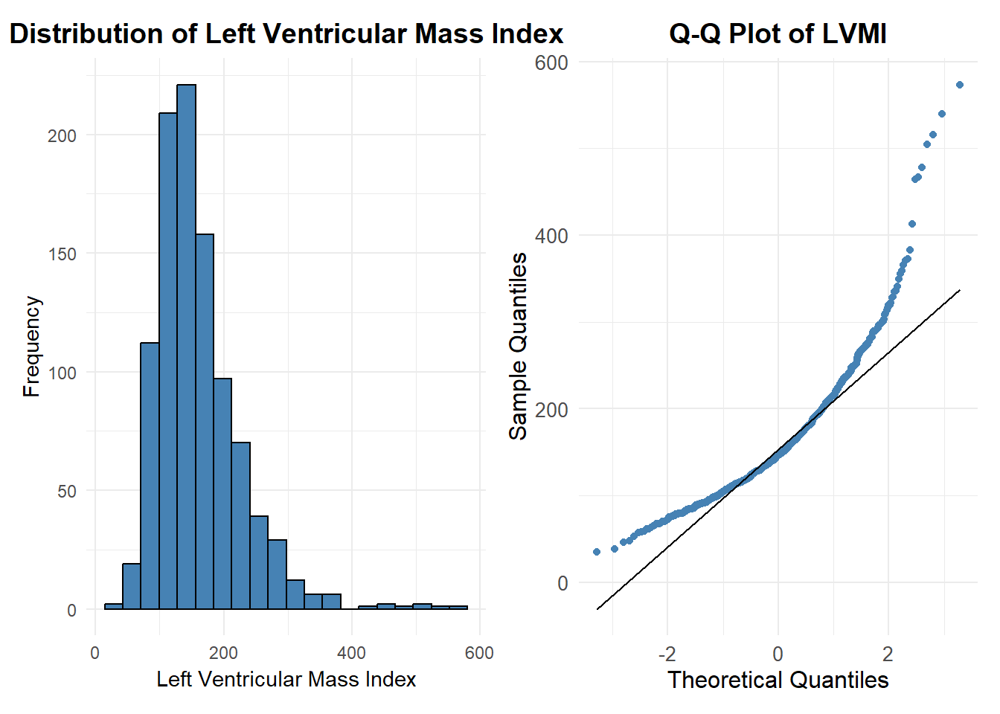
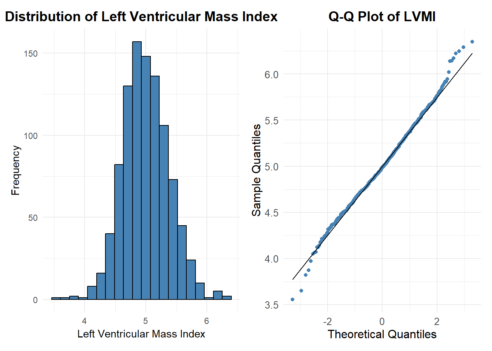
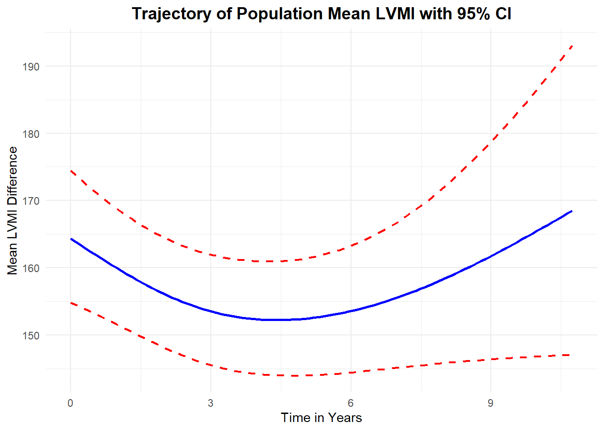
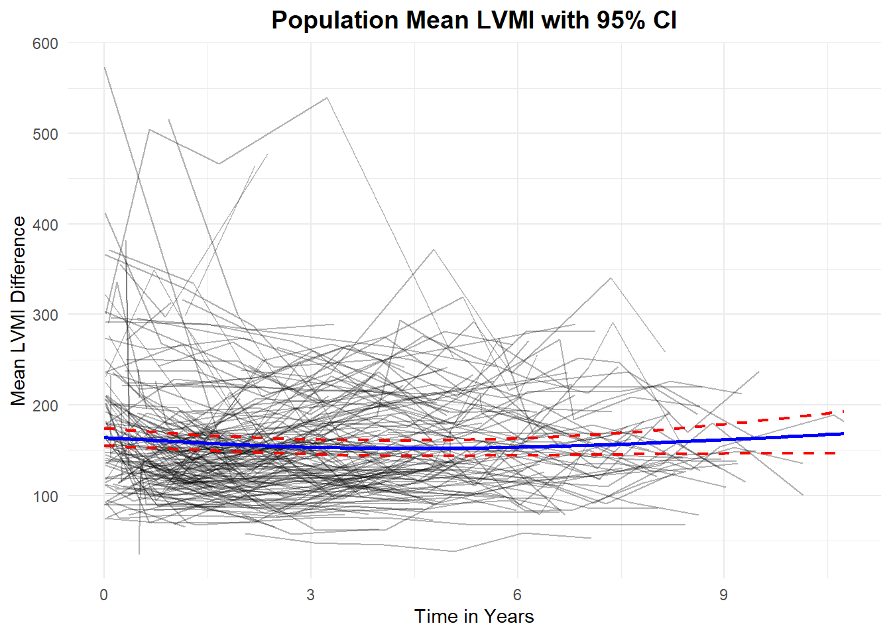
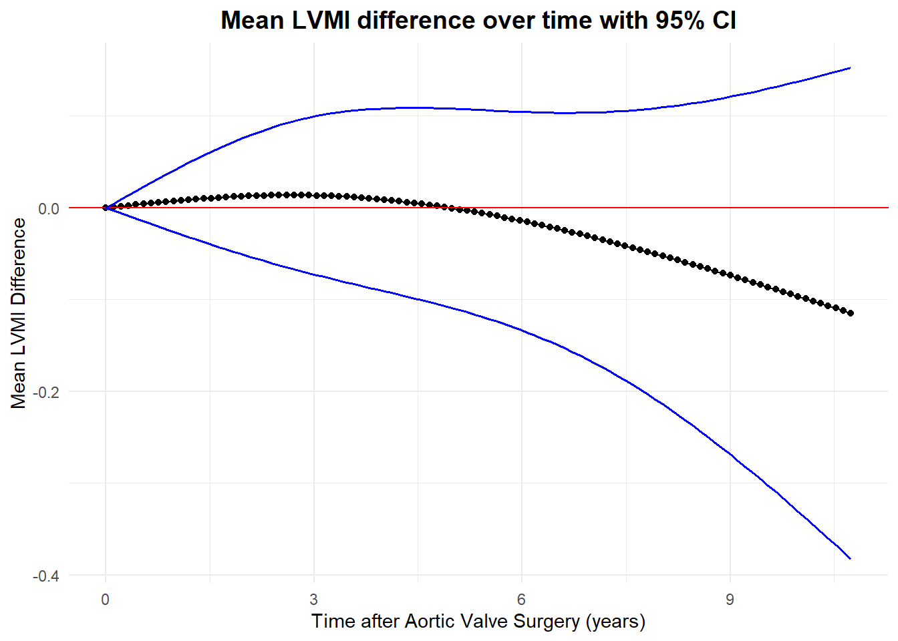

library(tidyverse)
library(nlme)
library(broom)
library(finalfit)
library(gtsummary)
library(lmtest)
library(lme4)
library(clubSandwich)
library(patchwork)
library(splines)
theme_set(theme_minimal())DATA ANALYSIS REVISION
Longitudinal Study of the Profile and Predictors of Left Ventricular Mass Regression After Stentless Aortic Valve Replacement
Questions
For patients who are otherwise similar, does the rate of LVMI regression differ between those who received porcine tissue valves and homograft valves?
How does age,diabetes,previous cardiac surgery, and sex affect the rate of LVMI regression?
heart_df <- read.table("aortic_valve.dat",header = TRUE)df <- heart_df %>%
mutate(
age = age %>% ff_label("Age(years)"),
sex = if_else(sex ==0,"Male","Female") %>%
fct_relevel("Female") %>%
ff_label("Sex"),
redo = if_else(redo ==0,"No","Yes") %>%
fct_relevel("No") %>%
ff_label("Previous Cardiac Surgery"),
emerg = if_else(emerg == 0,"Elective","Emergent") %>%
fct_relevel("Elective") %>%
ff_label("Operative Urgency"),
dm = if_else(dm ==0,"No","Yes") %>%
fct_relevel("No") %>%
ff_label("Preoperative Diabetes"),
type = if_else(type ==1,"Human Tissue","Porcine Tissue") %>%
fct_relevel("Porcine Tissue") %>%
ff_label("Type of Valve"),
lvmi =lvmi %>% ff_label("LVMI"),
futime = futime %>% ff_label("Follow-up Time(years)"),
status = if_else(status == 0,"Censored","Death") %>%
fct_relevel("Censored") %>%
ff_label("Status"),
log_lvmi = log(lvmi)
)df %>% select(-c(time,id)) %>%
tbl_summary(by = type,
statistic =
list(all_categorical() ~ "{n} ({p}%)",
all_continuous() ~ "{mean} ({sd})"),
digits = list(all_categorical() ~ 0,
all_continuous() ~ 0),
) %>%
add_overall() %>%
bold_labels() %>%
italicize_levels() %>%
modify_spanning_header(
update = all_stat_cols() ~ "**Type of Valve**"
) %>%
modify_footnote(update = all_stat_cols() ~
"*mean(standard deviation) for continuous; n(%) for categorical*")| Characteristic | Type of Valve | ||
|---|---|---|---|
| Overall, N = 9881 | Porcine Tissue, N = 5311 | Human Tissue, N = 4571 | |
| Follow-up Time(years) | 6 (2) | 6 (2) | 6 (2) |
| Status | |||
| Censored | 827 (84%) | 403 (76%) | 424 (93%) |
| Death | 161 (16%) | 128 (24%) | 33 (7%) |
| LVMI | 160 (65) | 164 (63) | 155 (68) |
| Age(years) | 65 (12) | 69 (9) | 59 (13) |
| Sex | |||
| Female | 285 (29%) | 152 (29%) | 133 (29%) |
| Male | 703 (71%) | 379 (71%) | 324 (71%) |
| Previous Cardiac Surgery | 93 (9%) | 28 (5%) | 65 (14%) |
| Operative Urgency | |||
| Elective | 900 (91%) | 471 (89%) | 429 (94%) |
| Emergent | 88 (9%) | 60 (11%) | 28 (6%) |
| Preoperative Diabetes | 46 (5%) | 29 (5%) | 17 (4%) |
| LVMI | 5 (0) | 5 (0) | 5 (0) |
| 1 mean(standard deviation) for continuous; n(%) for categorical | |||
lvmi_hist <- df %>%
ggplot(aes(x = lvmi))+
geom_histogram(fill = "steelblue",color = "black",bins = 20)+
labs(x = "Left Ventricular Mass Index",
y = "Frequency",
title = "Distribution of Left Ventricular Mass Index")+
theme(plot.title = element_text(hjust = 0.5, size = 14, face = "bold"))
lvmi_qq <- heart_df %>%
ggplot(aes(sample = lvmi))+
stat_qq(color = "steelblue")+
stat_qq_line()+
labs(
title = "Q-Q Plot of LVMI",
x = "Theoretical Quantiles",
y = "Sample Quantiles"
)+
theme( plot.title = element_text(hjust = 0.5, size = 14, face = "bold"),
axis.title = element_text(size = 12),
axis.text = element_text(size = 10))
lvmi_hist + lvmi_qq
log_hist <- df %>%
ggplot(aes(x = log(lvmi))) +
geom_histogram(fill = "steelblue",color = "black",bins = 20)+
labs(x = "Left Ventricular Mass Index",
y = "Frequency",
title = "Distribution of Left Ventricular Mass Index")+
theme(plot.title = element_text(hjust = 0.5, size = 14, face = "bold"))
log_qq <- df %>%
ggplot(aes(sample = log(lvmi)))+
stat_qq(color = "steelblue")+
stat_qq_line()+
labs(
title = "Q-Q Plot of LVMI",
x = "Theoretical Quantiles",
y = "Sample Quantiles"
)+
theme( plot.title = element_text(hjust = 0.5, size = 14, face = "bold"),
axis.title = element_text(size = 12),
axis.text = element_text(size = 10))
log_hist + log_qq
NULL MODEL WITH NO VALVE TYPE INCLUDED
model.null <- df %>%
lmer(log_lvmi ~ ns(time,2) + age + I(sex) + I(redo) + I(emerg) + I(dm) +
(time|id),REML = FALSE, data = .)
summary(model.null)Linear mixed model fit by maximum likelihood ['lmerMod']
Formula: log_lvmi ~ ns(time, 2) + age + I(sex) + I(redo) + I(emerg) +
I(dm) + (time | id)
Data: .
AIC BIC logLik deviance df.resid
223.6 282.3 -99.8 199.6 976
Scaled residuals:
Min 1Q Median 3Q Max
-4.6210 -0.5258 -0.0068 0.4702 4.7187
Random effects:
Groups Name Variance Std.Dev. Corr
id (Intercept) 0.102444 0.32007
time 0.001627 0.04033 -0.38
Residual 0.037108 0.19263
Number of obs: 988, groups: id, 256
Fixed effects:
Estimate Std. Error t value
(Intercept) 4.8746263 0.1220721 39.932
ns(time, 2)1 -0.1177107 0.0531716 -2.214
ns(time, 2)2 0.0696832 0.0690823 1.009
age 0.0008286 0.0016805 0.493
I(sex)Male 0.1737831 0.0455515 3.815
I(redo)Yes 0.0318716 0.0688711 0.463
I(emerg)Emergent 0.0202652 0.0655878 0.309
I(dm)Yes -0.1889789 0.0958543 -1.972
Correlation of Fixed Effects:
(Intr) n(,2)1 n(,2)2 age I(sx)M I(rd)Y I(mr)E
ns(time,2)1 -0.162
ns(time,2)2 -0.039 0.474
age -0.940 0.065 0.040
I(sex)Male -0.374 -0.020 -0.007 0.125
I(redo)Yes -0.039 -0.025 -0.022 0.015 -0.078
I(mrg)Emrgn 0.013 0.062 0.025 -0.089 0.025 -0.090
I(dm)Yes -0.011 -0.015 0.002 -0.029 0.022 -0.058 -0.019MODEL WITH VALVE TYPE INCLUDED BUT ASSUMING SAME SLOPE
model_type <- df %>%
lmer(log_lvmi ~ ns(time,2) + age + I(sex) + I(redo) + I(emerg) + I(dm) + I(type) +(time|id),REML = FALSE, data = .)
summary(model_type)Linear mixed model fit by maximum likelihood ['lmerMod']
Formula: log_lvmi ~ ns(time, 2) + age + I(sex) + I(redo) + I(emerg) +
I(dm) + I(type) + (time | id)
Data: .
AIC BIC logLik deviance df.resid
222.8 286.5 -98.4 196.8 975
Scaled residuals:
Min 1Q Median 3Q Max
-4.6145 -0.5247 -0.0137 0.4604 4.7304
Random effects:
Groups Name Variance Std.Dev. Corr
id (Intercept) 0.101568 0.31870
time 0.001643 0.04054 -0.38
Residual 0.037088 0.19258
Number of obs: 988, groups: id, 256
Fixed effects:
Estimate Std. Error t value
(Intercept) 4.9992364 0.1423174 35.127
ns(time, 2)1 -0.1206017 0.0532614 -2.264
ns(time, 2)2 0.0683962 0.0691854 0.989
age -0.0005007 0.0018488 -0.271
I(sex)Male 0.1718417 0.0452879 3.794
I(redo)Yes 0.0550676 0.0698375 0.789
I(emerg)Emergent 0.0144303 0.0653222 0.221
I(dm)Yes -0.1934533 0.0952884 -2.030
I(type)Human Tissue -0.0768065 0.0458680 -1.675
Correlation of Fixed Effects:
(Intr) n(,2)1 n(,2)2 age I(sx)M I(rd)Y I(mr)E I(dm)Y
ns(time,2)1 -0.157
ns(time,2)2 -0.040 0.476
age -0.948 0.073 0.042
I(sex)Male -0.332 -0.019 -0.007 0.123
I(redo)Yes 0.071 -0.031 -0.024 -0.072 -0.082
I(mrg)Emrgn -0.018 0.065 0.026 -0.056 0.026 -0.099
I(dm)Yes -0.024 -0.014 0.002 -0.014 0.023 -0.063 -0.017
I(typ)HmnTs -0.522 0.032 0.011 0.429 0.025 -0.198 0.055 0.029MODEL WITH INTERACTION OF VALVE TYPE WITH TIME
model_interaction <- df %>%
lmer(log_lvmi ~ ns(time,2) + age + I(sex) + I(redo) + I(emerg) + I(dm) + I(type) + I(type):ns(time,2) +(time|id),REML = FALSE, data = .)
summary(model_interaction)Linear mixed model fit by maximum likelihood ['lmerMod']
Formula: log_lvmi ~ ns(time, 2) + age + I(sex) + I(redo) + I(emerg) +
I(dm) + I(type) + I(type):ns(time, 2) + (time | id)
Data: .
AIC BIC logLik deviance df.resid
226.0 299.4 -98.0 196.0 973
Scaled residuals:
Min 1Q Median 3Q Max
-4.5994 -0.5263 -0.0069 0.4614 4.7380
Random effects:
Groups Name Variance Std.Dev. Corr
id (Intercept) 0.101906 0.31923
time 0.001706 0.04131 -0.39
Residual 0.036892 0.19207
Number of obs: 988, groups: id, 256
Fixed effects:
Estimate Std. Error t value
(Intercept) 5.0025129 0.1432140 34.930
ns(time, 2)1 -0.1076071 0.0743096 -1.448
ns(time, 2)2 0.1282033 0.0966603 1.326
age -0.0005042 0.0018499 -0.273
I(sex)Male 0.1713477 0.0453187 3.781
I(redo)Yes 0.0565449 0.0699202 0.809
I(emerg)Emergent 0.0133837 0.0653505 0.205
I(dm)Yes -0.1945720 0.0953603 -2.040
I(type)Human Tissue -0.0815988 0.0545230 -1.497
ns(time, 2)1:I(type)Human Tissue -0.0291270 0.1068183 -0.273
ns(time, 2)2:I(type)Human Tissue -0.1269885 0.1392295 -0.912
Correlation of Fixed Effects:
(Intr) n(,2)1 n(,2)2 age I(sx)M I(rd)Y I(mr)E I(dm)Y I(t)HT
ns(time,2)1 -0.177
ns(time,2)2 -0.027 0.475
age -0.944 0.061 0.032
I(sex)Male -0.329 -0.028 -0.017 0.123
I(redo)Yes 0.069 -0.007 0.001 -0.071 -0.082
I(mrg)Emrgn -0.018 0.041 0.008 -0.056 0.026 -0.099
I(dm)Yes -0.022 -0.024 -0.007 -0.014 0.024 -0.064 -0.017
I(typ)HmnTs -0.495 0.354 0.016 0.368 0.014 -0.160 0.046 0.015
n(,2)1:I()T 0.093 -0.692 -0.329 -0.013 0.020 -0.023 0.008 0.021 -0.482
n(,2)2:I()T -0.001 -0.328 -0.694 -0.003 0.018 -0.026 0.015 0.013 -0.018
n(,2)1T
ns(time,2)1
ns(time,2)2
age
I(sex)Male
I(redo)Yes
I(mrg)Emrgn
I(dm)Yes
I(typ)HmnTs
n(,2)1:I()T
n(,2)2:I()T 0.480
optimizer (nloptwrap) convergence code: 0 (OK)
Model failed to converge with max|grad| = 0.00301617 (tol = 0.002, component 1)LR TEST OF NULL MODEL AND MODEL WITH VALVE TYPE BUT ASSUMING SAME SLOPE
lrtest(model.null,model_type)| #Df | LogLik | Df | Chisq | Pr(>Chisq) |
|---|---|---|---|---|
| 12 | -99.79917 | NA | NA | NA |
| 13 | -98.40883 | 1 | 2.780681 | 0.0954076 |
LR TEST OF NULL MODEL AND INTERACTION MODEL
lrtest(model.null,model_interaction)| #Df | LogLik | Df | Chisq | Pr(>Chisq) |
|---|---|---|---|---|
| 12 | -99.79917 | NA | NA | NA |
| 15 | -97.98680 | 3 | 3.624731 | 0.3049416 |
LRTEST OF SAME SLOPE MODEL AND INTERACTION TERM MODEL
lrtest(model_type,model_interaction)| #Df | LogLik | Df | Chisq | Pr(>Chisq) |
|---|---|---|---|---|
| 13 | -98.40883 | NA | NA | NA |
| 15 | -97.98680 | 2 | 0.8440498 | 0.6557177 |
GETTING PREDICTIONS FROM NULL MODEL
df_model <- model.null %>%
predict(se = TRUE) %>%
as_tibble() %>%
mutate(id = df$id,
preds = exp(fit),
lower_ci = exp(fit - 1.96 * se.fit),
upper_ci = exp(fit + 1.96 * se.fit),
lvmi = df$lvmi,
time = df$time
) %>%
select(id,time,lvmi,preds,lower_ci,upper_ci,everything())
df_model_summary <- df_model %>%
group_by(time) %>%
summarise(mean_lvmi = mean(lvmi),
mean_pred_lvmi = mean(preds)) Trajectory of Predicted LVMI Regression
# create a new data set with mean of continuous variables and mode of categorical variables.This represents the population mean
# make predictions on it to get population mean curve
## type of valve is excluded because from our model there is no difference in trajectory for the two valve types
new_data <- tibble(
time = seq(min(df$time), max(df$time), length.out = 100),
age = mean(df$age,na.rm = TRUE),
sex = "Male",
redo = "No",
emerg = "Elective",
dm = "No")## make predictions on new data using the chosen model
## this gives population mean curve
## calculate confidence intervals for predicted values
new_data_preds <- model.null %>%
predict(se = TRUE,re.form = NA,newdata = new_data) %>%
as_tibble() %>%
mutate(
preds = exp(fit),
lower_ci = exp(fit - 1.96 * se.fit),
upper_ci = exp(fit + 1.96 * se.fit))
df_predicted <- bind_cols(new_data,new_data_preds)# make a plot of predicted values and confidence interval
df_predicted %>%
ggplot(aes(x = time)) +
geom_line(aes(y = preds), color = "blue", size = 1) +
geom_line(aes(y = lower_ci), color = "red", linetype = "dashed",size = 0.8) +
geom_line(aes(y = upper_ci), color = "red", linetype = "dashed",size = 0.8) +
geom_abline(intercept = 0, slope = 0, color = "red") +
labs(x = "Time in Years",
y = "Mean LVMI Difference",
title = "Trajectory of Population Mean LVMI with 95% CI")+
theme(
legend.position = c(1, 1),
legend.justification = c(1, 1),
plot.title = element_text(hjust = 0.5, size = 14, face = "bold")
)
## adding predicted values from observed data
df_predicted %>%
ggplot(aes(x = time)) +
geom_line(data = df,aes(group = id,y= lvmi),alpha = 0.3)+
geom_line(aes(y = preds), color = "blue", size = 1) +
geom_line(aes(y = lower_ci), color = "red", linetype = "dashed",size = 0.8) +
geom_line(aes(y = upper_ci), color = "red", linetype = "dashed",size = 0.8) +
geom_abline(intercept = 0, slope = 0, color = "red") +
labs(x = "Time in Years",
y = "Mean LVMI Difference",
title = "Population Mean LVMI with 95% CI")+
theme(
legend.position = c(1, 1),
legend.justification = c(1, 1),
plot.title = element_text(hjust = 0.5, size = 14, face = "bold")
)
time <-seq(min(df$time), max(df$time), length.out = 100)
spline_basis <- ns(df$time, df = 2)
boundary_knots <- attr(spline_basis, "Boundary.knots")
internal_knots <- attr(spline_basis, "knots")
A <- matrix(ns(time,Boundary.knots = boundary_knots,knots = internal_knots),ncol = 2)
b <- matrix(summary(model_interaction)$coefficients[10:11, 1], ncol = 1)
var_b <- summary(model_interaction)$vcov[10:11, 10:11]
fit=A %*% b
var_fit = A %*% var_b %*% t(A)
se_fit = sqrt(diag(var_fit))
result=data.frame(time=time,fit=fit,se_fit=se_fit,ci_l=fit-2*se_fit,ci_u=fit+2*se_fit)
result %>%
ggplot(aes(x=time, y=fit)) + geom_point() + geom_line() +
geom_abline(intercept=0,slope=0,col="red") +
geom_line(aes(x=time,y=ci_l),col="blue",linewidth = 0.7) +
geom_line(aes(x=time,y=ci_u),col="blue",linewidth = 0.7)+
labs(title = "Mean LVMI difference over time with 95% CI",
x = "Time after Aortic Valve Surgery (years)",
y = "Mean LVMI Difference")+
theme(plot.title = element_text(face = "bold",hjust = 0.5,size = 14))